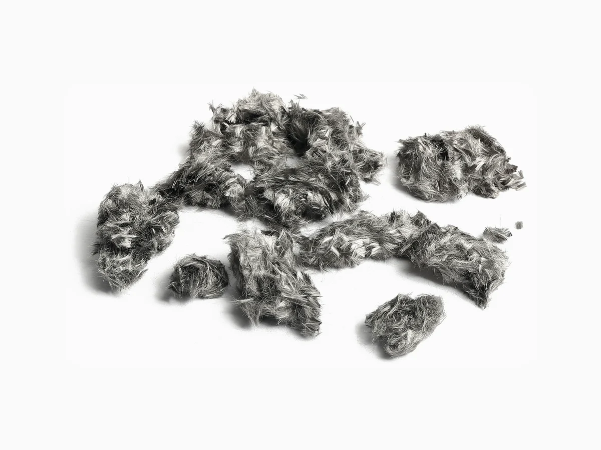
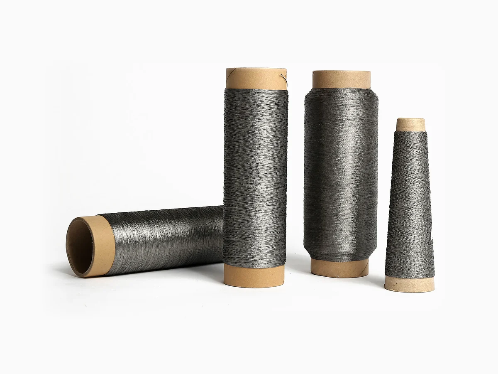
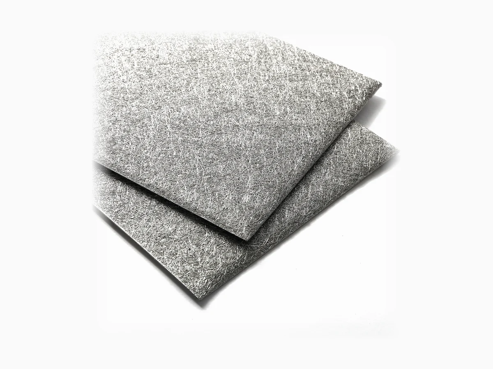
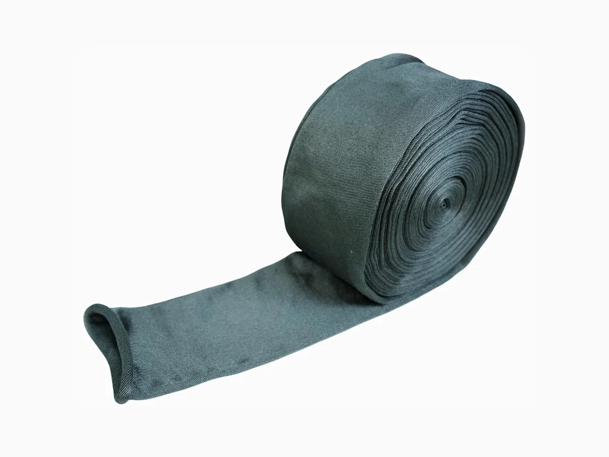

Your conditions, our fiber — a material proposed for your duty, not a catalogue number.
What this solution is for
- Your application is not a catalogue item, and suppliers only offer what they already make.
- Ceramic, polymer or coated parts fail under combined heat, corrosion, abrasion or repeated flexing.
- You need a specific porosity, resistance, thickness or shape and cannot find it off the shelf.
- Development stalls because no supplier will build small sample lots for testing.
| Item | Detail |
|---|---|
| Target buyers | Manufacturers outside the six solutions with high-temperature, corrosive, conductive, porous or vibration-damping requirements · OEMs replacing ceramic, polymer or coated parts · R&D teams developing a new component |
| Typical conditions | Any combination of heat, corrosion, conductivity, porosity, flexibility and damping that standard materials do not cover |
| Lead products | Selected or made to order across fiber, yarn, textiles, felt, plate, filter elements and separation equipment |
| How it is verified | QL lab testing plus your own trial, then small-batch validation before scale-up |
Products for this application

QL metal fiber
Micron-scale fiber drawn from stainless steel and other metal wire, supplied as long filament or staple. It keeps the strength, conductivity and heat resistance of metal with the flexibility of a textile fiber.
View product
QL metal fiber yarn
Flexible yarn spun from 100% metal fiber sliver — the core raw material for knitted and woven metal fiber fabric, sleeves and tape.
View product
Sintered metal fiber felt
Non-woven filter medium made from randomly laid short metal fibers, sintered at high temperature so the fibers bond into a uniform, connected pore structure. Mainstream material 316L stainless steel.
View product
High-temperature elastic metal fiber sleeve
Elastic tubular protection rated 350–1100 °C — keeps its shape, does not crack or powder at end of life. Typical use: ceramic roller sleeves in physical tempering furnaces. TGZ series.
View product
Pleated metal fiber cartridges
Pleated cartridges built from our own sintered metal fiber felt with support and protective mesh, sized to your housing.
View product
Tank-type oil recovery system
Coalescing oil removal unit for smaller flows; skid-mountable and connected directly to site pipework.
View productCandidate products and selection logic
Candidates are a starting point. Final suitability depends on your exact conditions, so we confirm it with samples and testing rather than on paper.
| Application | Candidate products | Selection logic |
|---|---|---|
| Conductivity and heating | Metal fiber, pure-metal and blended yarn, insulated metal fiber thread, woven tape | The conductor is solid metal, so performance does not fade with washing or flexing |
| High temperature | Knitted and braided sleeves, woven cloth, rope, needled and damping felt, rated 350–1100 °C | Stainless steel, FeCrAl or nickel alloys chosen to the temperature and atmosphere |
| Corrosive media | Sintered felt, mesh, plate and elements in 316L, nickel, Hastelloy, Monel, duplex or titanium | The alloy is matched to the medium rather than one grade for every duty |
| Porosity and permeability | Sintered felt, porous plate 50–90% porosity, sintered mesh 2–100 µm | Pore structure designed to your flow and retention targets |
| Flexibility and weaving | Fiber, yarn and technical textiles | Runs on standard spinning, weaving, knitting and sewing equipment |
| Damping and sound absorption | Damping felt 2–3 mm thick, porous plate | Three-dimensional fiber network that holds its properties at high temperature |
How we work together
- Samples are built in our own lab, from fiber to finished form, so small lots for testing do not need a production order.
- Test data travels with the sample; fiber diameter, alloy, porosity or resistance are adjusted with your feedback.
- Once performance is confirmed, the specification is frozen and production runs to it.
What buyers verify
- Whether the material holds under your actual temperature, medium and load.
- Performance retention after cycling — thermal, washing, flexing or cleaning.
- Batch consistency through small-batch validation before anything is scaled.
Send us your operating conditions, and we will send samples.
Temperature, medium, pressure, filtration rating, resistance or porosity — give us the numbers you work with and our engineers will recommend a configuration, quote it and arrange samples for your own testing.